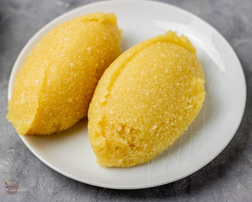

Eba

Description
This is a quick overview of how to make Eba, a popular Nigerian food. You only need boiling hot water,
a sturdy spoon or wooden spatula and garri (See ingredients below) to make eba.
For every 1 cup of boiling water used, you will need between ⅓ cup of garri to ½ cup.
Ingredients
Steps
- Bring water to a boil on a Stovetop
- Add and Stir ⅓ cup of garri to the hot water with a wooden spatula.
- If the eba is still soft, sprinkle more garri until desired texture is achieved
- Serve it immediately with any Nigerian soup of choice